– Вони заплатять за те шо зробили зі мною... –
Людина чи вірус? Герой чи катастрофа? Дізнайся історію одного з найзаґадковіших персонажів ігрового світу Prototype.
Олексій Прототипович був звичайним ученим Gentek, допоки не став носієм смертоносного вірусу Blacklight. Після загибелі в лабораторії він відродився — не людиною, а істотою, здатною поглинати, копіювати та змінювати себе. Мерсер не має чітких спогадів, лише уламки минулого, що ведуть його шляхом помсти й пошуку істини про власне походження.
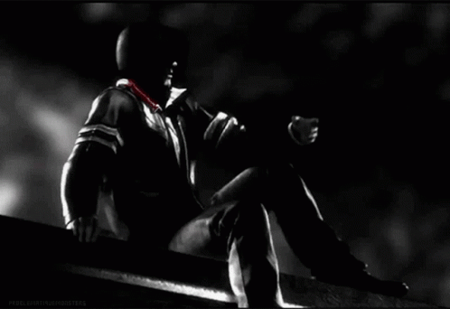
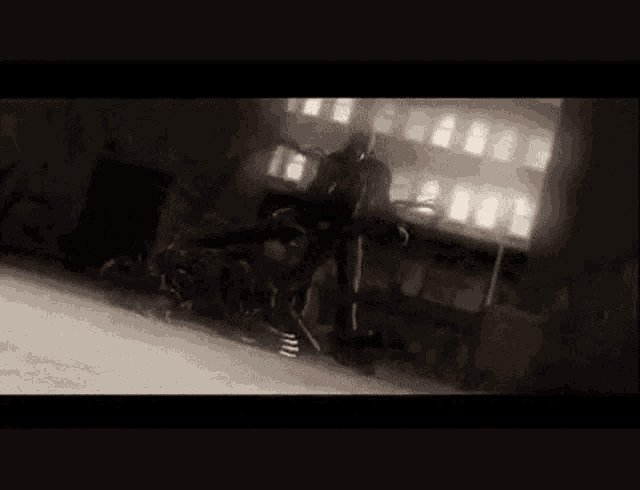
отримує вигляд, навички й спогади жертв
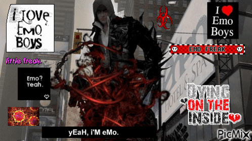
кігті, леза, молоти, щупальця — тіло підлаштовується під будь-яку ситуацію
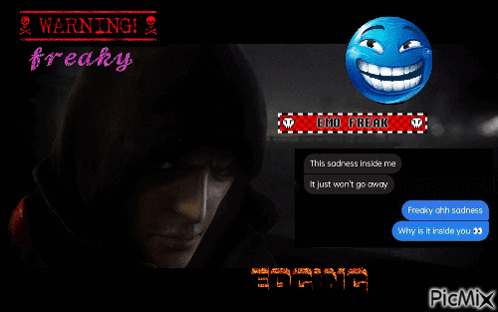
протистоїть танкам, вертольотам, зараженим та військовим спецпідрозділам
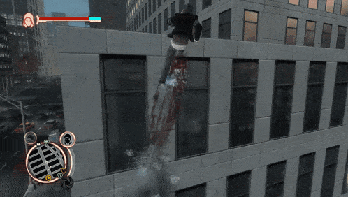
може бігти по стінах, стрибати на будівлі та пересуватися містом за секунди
Темний худі, холодний погляд, тіло, яке вже не зовсім людське. У цій формі Мерсер зберігає людську подобу — але всередині нього кипить вірусна енергія. Тиха хижість, яку легко недооцінити.
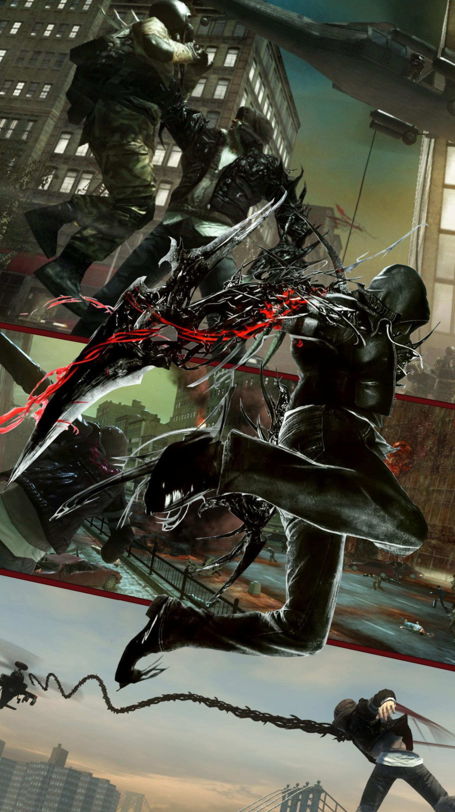
Руки перетворюються на леза, молоти або кігті. М'язи стають щільнішими, реакції — вбивчо точними. Це форма для ближнього бою, де Мерсер — буря, що розриває все навколо.
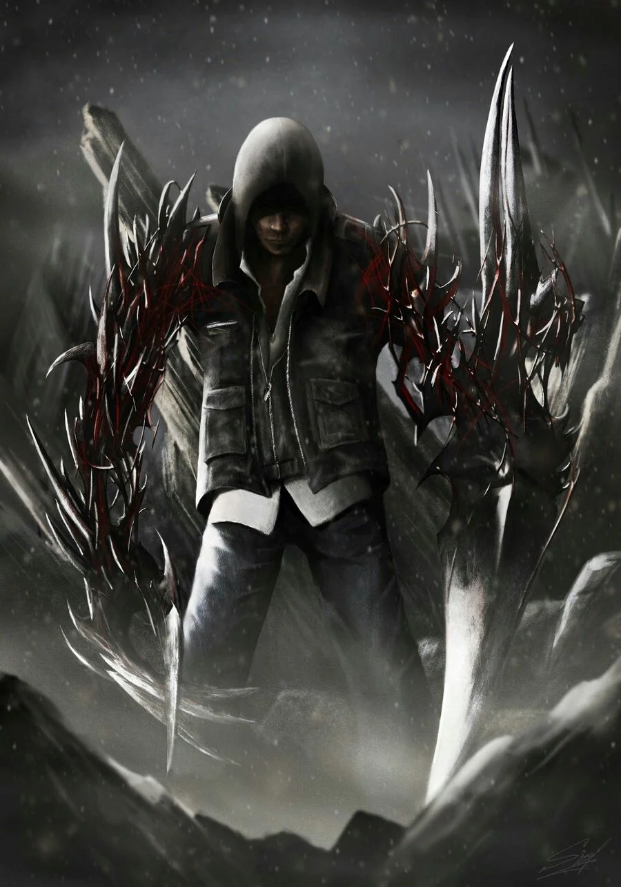
Тіло вкривається важкою органічною бронею. Природна зброя вірусу робить Мерсера майже невразливим. Ідеально підходить для прориву крізь натовпи чи зіткнення з технікою.
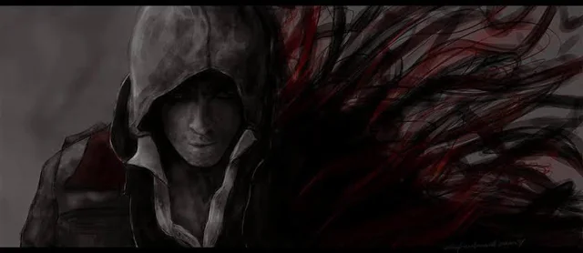
З тіла вириваються гострі біомаси у вигляді щупалець. Це форма хаосу, що дозволяє Мерсеру розривати цілі райони одним ударом. Чиста руйнація й контроль території.
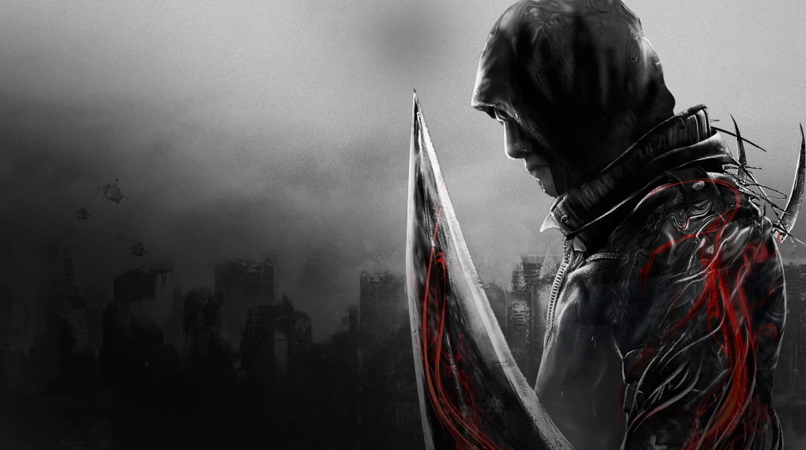
Найбільш жахлива, майже нелюдська версія. Суміш усіх здібностей, розкрита на максимум. У цій формі Мерсер — апокаліпсис, що ходить на двох ногах.
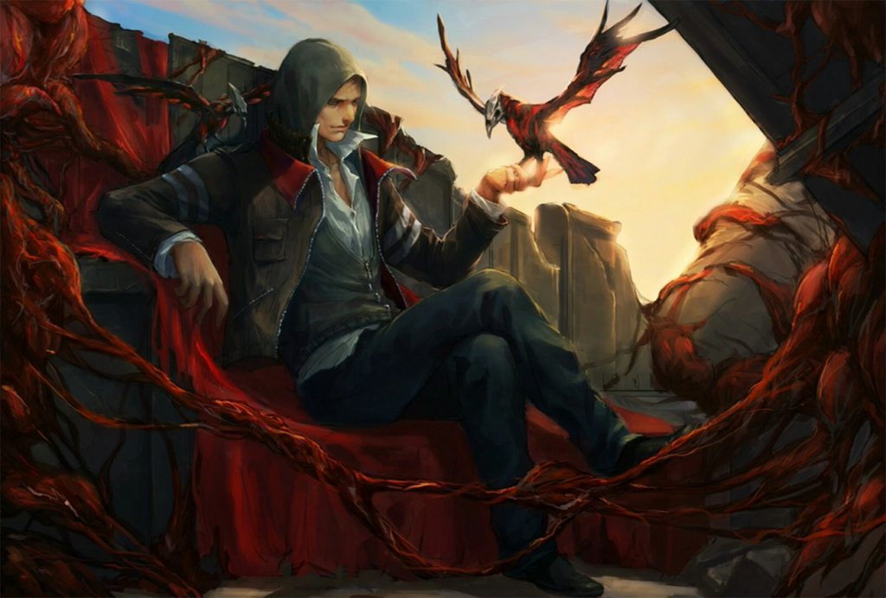
Форма, яка показує справжній масштаб вірусу всередині Мерсера. У ній його тіло частково розчиняється в потоках біомаси, що поширюється навколо — вулиці стають продовженням його організму, а територія перетворюється на поле контролю.
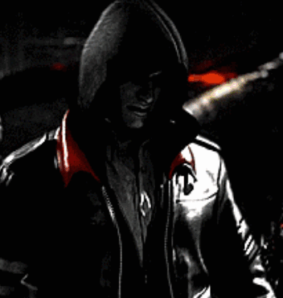